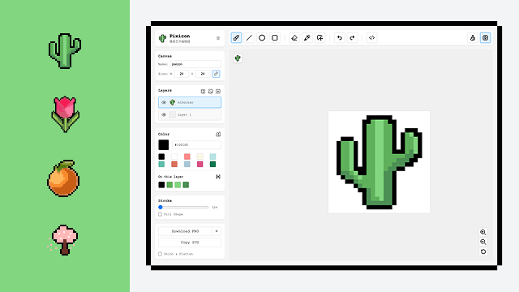
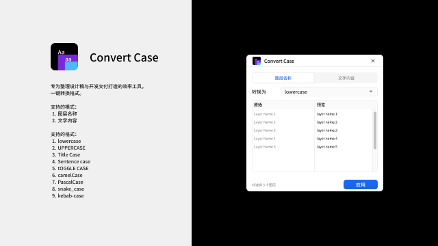
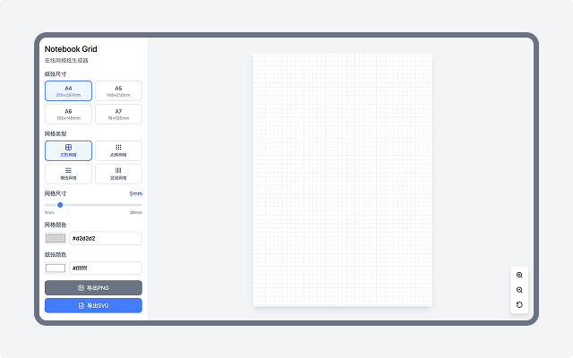
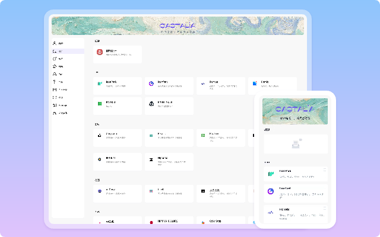
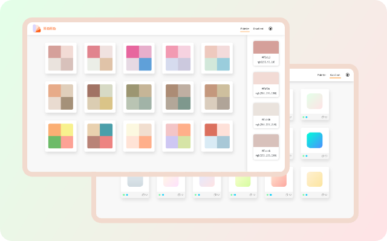

成员
GitHub
Afterwork Design 是由两个年轻人组成的组织，因为我们对这个世界充满好奇， 也乐于尝试不同的东西，所以我们希望在这里，为我们自己，也为大家，开发一些有趣又有用的东西。

Pixicon 是一款专注于像素创作的浏览器编辑器，适合绘制图标和各种小尺寸插画。

Convert Case 是一个批量转换图层名称、文字内容格式的 Figma 插件，告别繁琐操作。支持大小写、驼峰、下划线等多种格式，满足不同需求。

Notebook Grid 是一个在线网格纸生成器，界面简洁高效。

Castalia 是一个资源导航网站，精选国内外优质网站，让每个人都能找到自己需要的资源。

KaKa 是一个色板网站，包含纯色、渐变与阶梯色，所有颜色都是经过多次尝试调整出来的，可直接使用。